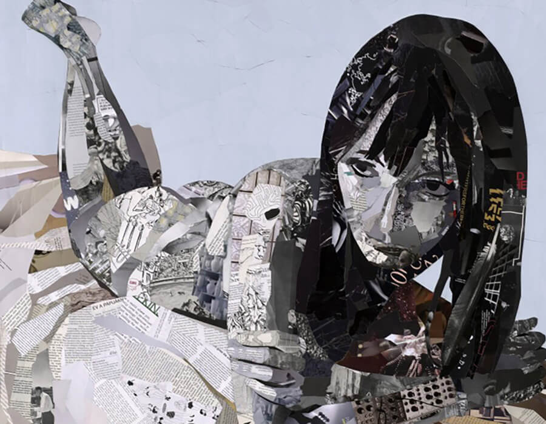

Quando a tecnologia encontra a arte.
Nas artes visuais, a inteligência artificial está mudando a forma como imagens, ilustrações e obras digitais são criadas. Ela pode auxiliar artistas em etapas como geração de imagens, edição, criação de ideias e experimentação de diferentes estilos. Isso pode tornar o processo criativo mais rápido e acessível, mas também gera preocupações. O uso da IA pode afetar o trabalho de ilustradores, designers e outros artistas, principalmente quando empresas utilizam a tecnologia para reduzir custos e substituir determinadas funções. Além disso, existe o debate sobre autoria e criatividade, já que muitas ferramentas de IA são treinadas com obras produzidas por artistas. Por isso, é importante pensar em um uso responsável da tecnologia, valorizando o trabalho humano e garantindo que a IA seja uma ferramenta de apoio, e não apenas uma forma de substituir os artistas.

“Minhas criações são fruto de verdadeiras colaborações entre o ser humano e a máquina. Sou muito otimista em relação à IA generativa por causa do potencial que ela tem para ampliar nossas memórias. Como artistas, podemos explorar esse potencial para representar a natureza na era digital. A IA generativa pode trabalhar com imagens, sons, textos e até dados olfativos.”
Refik Anadol
Artista Digital